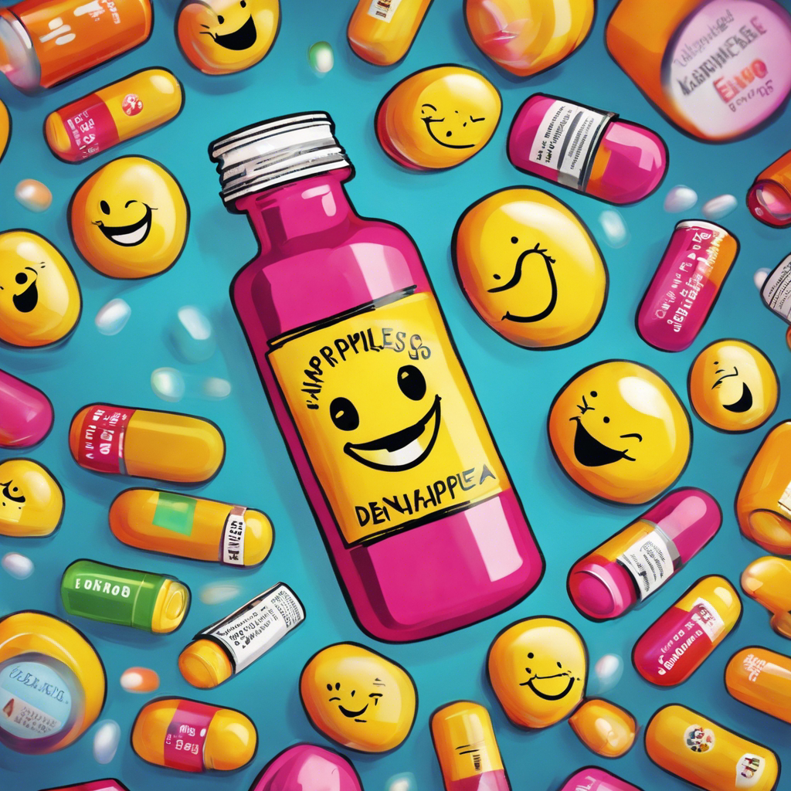

¡Bálsamo de Cáscaras de Plátano! El milagroso elixir antiedad
¿Quién necesita Botox cuando tienes esto?
¡Bienvenidos, queridos adictos a la juventud eterna! Hoy les traigo el secreto mejor guardado de las
celebridades: ¡el bálsamo de cáscaras de plátano! ¿Aburrido de inyectarte toxina botulínica? ¡Es
hora de probar algo más natural y, diríamos, salvaje! Descubre cómo las cáscaras de plátano pueden
retrasar el paso del tiempo y darte ese brillo juvenil que ni la ciencia moderna puede replicar.
¡Prepárate para lucir tan fresco como un plátano recién pelado!
Instrucciones de uso: No, no te lo comas
¿Te imaginas intentando comer una cáscara de plátano para rejuvenecer? ¡Pues detente ahí! Te
brindamos las instrucciones precisas para aplicar este elixir con sabiduría. Desde la técnica
adecuada hasta las precauciones de seguridad, aquí encontrarás todo lo que necesitas saber para no
terminar como un mono en una dieta exótica. ¡Descubre el arte de ser un Picasso con cáscaras de
plátano en tu rostro!
¡Atrévete con la Terapia de Abrazos de Oso Koala!
El remedio peludo que todos necesitan
¡Hola, amigos amantes de lo extravagante! ¿Alguna vez has deseado un abrazo que te haga sentir como
si estuvieras envuelto en una nube de algodón? ¡Pues ahora es posible con nuestra Terapia de Abrazos
de Oso Koala! Olvídate de las sesiones de terapia convencionales y sumérgete en el mundo esponjoso y
reconfortante de estos adorables marsupiales. ¡Te prometemos que saldrás de aquí con una sonrisa y
algunas cuantas hojas de eucalipto en los bolsillos!
Aviso: no apto para alérgicos al pelaje
Antes de saltar a los brazos de nuestros koalas terapéuticos, es importante tener en cuenta algunas
advertencias. Desde reacciones alérgicas hasta posibles momentos de ternura extrema, este
tratamiento no es para los débiles de corazón. Pero si estás dispuesto a abrazar la peluda
felicidad, te garantizamos una experiencia que recordarás durante años. ¡Prepárate para abrazar la
vida (y un koala) como nunca antes lo has hecho!
Las Pastillas de Felicidad: ¿Euforia o Placebo?
La píldora que todos buscan, pero ¿es demasiado buena para ser verdad?
¡Saludos, buscadores de la felicidad instantánea! Hoy nos adentramos en el controvertido mundo de
las pastillas de felicidad. ¿Es realmente posible embotellar la alegría y venderla sin receta
médica? Analizaremos los pros y los contras de este producto que promete convertir tus días grises
en una fiesta interminable. ¿Será un milagro farmacéutico o simplemente otro truco de marketing?
¡Prepárate para descubrir la verdad detrás de la sonrisa!

Efectos secundarios: risas incontrolables y posibles ataques de felicidad
Antes de lanzarte al éxtasis de la felicidad encapsulada, es esencial conocer los posibles efectos
secundarios. Desde ataques repentinos de risa hasta momentos de éxtasis desmedido, estas pastillas
no son aptas para los solemnes. Pero si estás dispuesto a correr el riesgo, quién sabe, ¡podrías ser
el próximo emoji de cara sonriente en la vida real! ¡Atrévete a ser feliz (y tal vez un poco
loquito) con nuestras pastillas de la felicidad!